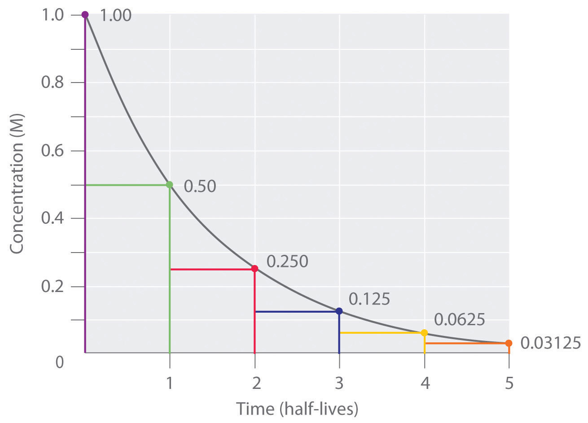
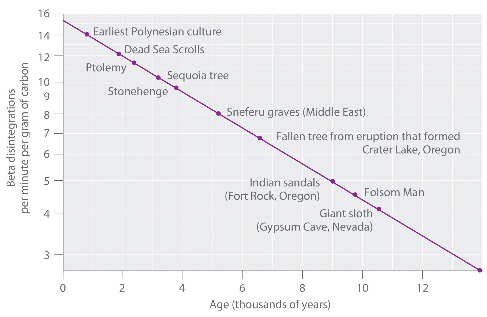

Another approach to describing reaction rates is based on the time required for the concentration of a reactant to decrease to one-half its initial value. This period of time is called the half-lifeThe period of time it takes for the concentration of a reactant to decrease to one-half its initial value. of the reaction, written as t1/2. Thus the half-life of a reaction is the time required for the reactant concentration to decrease from [A]0 to [A]0/2. If two reactions have the same order, the faster reaction will have a shorter half-life, and the slower reaction will have a longer half-life.
The half-life of a first-order reaction under a given set of reaction conditions is a constant. This is not true for zeroth- and second-order reactions. The half-life of a first-order reaction is independent of the concentration of the reactants. This becomes evident when we rearrange the integrated rate law for a first-order reaction (Equation 14.21) to produce the following equation:
Equation 14.27
Substituting [A]0/2 for [A] and t1/2 for t (to indicate a half-life) into Equation 14.27 gives
The natural logarithm of 2 (to three decimal places) is 0.693. Substituting this value into the equation, we obtain the expression for the half-life of a first-order reaction:
Equation 14.28
Thus, for a first-order reaction, each successive half-life is the same length of time, as shown in Figure 14.17 "The Half-Life of a First-Order Reaction", and is independent of [A].
Figure 14.17 The Half-Life of a First-Order Reaction
This plot shows the concentration of the reactant in a first-order reaction as a function of time and identifies a series of half-lives, intervals in which the reactant concentration decreases by a factor of 2. In a first-order reaction, every half-life is the same length of time.
If we know the rate constant for a first-order reaction, then we can use half-lives to predict how much time is needed for the reaction to reach a certain percent completion.
| Number of Half-Lives | Percentage of Reactant Remaining | |
|---|---|---|
| 1 | ||
| 2 | ||
| 3 | ||
| n | ||
As you can see from this table, the amount of reactant left after n half-lives of a first-order reaction is (1/2)n times the initial concentration.
For a first-order reaction, the concentration of the reactant decreases by a constant with each half-life and is independent of [A].
The anticancer drug cisplatin hydrolyzes in water with a rate constant of 1.5 × 10−3 min−1 at pH 7.0 and 25°C. Calculate the half-life for the hydrolysis reaction under these conditions. If a freshly prepared solution of cisplatin has a concentration of 0.053 M, what will be the concentration of cisplatin after 5 half-lives? after 10 half-lives? What is the percent completion of the reaction after 5 half-lives? after 10 half-lives?
Given: rate constant, initial concentration, and number of half-lives
Asked for: half-life, final concentrations, and percent completion
Strategy:
A Use Equation 14.28 to calculate the half-life of the reaction.
B Multiply the initial concentration by 1/2 to the power corresponding to the number of half-lives to obtain the remaining concentrations after those half-lives.
C Subtract the remaining concentration from the initial concentration. Then divide by the initial concentration, multiplying the fraction by 100 to obtain the percent completion.
Solution:
A We can calculate the half-life of the reaction using Equation 14.28:
Thus it takes almost 8 h for half of the cisplatin to hydrolyze.
B After 5 half-lives (about 38 h), the remaining concentration of cisplatin will be as follows:
After 10 half-lives (77 h), the remaining concentration of cisplatin will be as follows:
C The percent completion after 5 half-lives will be as follows:
The percent completion after 10 half-lives will be as follows:
Thus a first-order chemical reaction is 97% complete after 5 half-lives and 100% complete after 10 half-lives.
Exercise
In Example 4 you found that ethyl chloride decomposes to ethylene and HCl in a first-order reaction that has a rate constant of 1.6 × 10−6 s−1 at 650°C. What is the half-life for the reaction under these conditions? If a flask that originally contains 0.077 M ethyl chloride is heated at 650°C, what is the concentration of ethyl chloride after 4 half-lives?
Answer: 4.3 × 105 s = 120 h = 5.0 days; 4.8 × 10−3 M
As you learned in Chapter 1 "Introduction to Chemistry", radioactivity, or radioactive decay, is the emission of a particle or a photon that results from the spontaneous decomposition of the unstable nucleus of an atom. The rate of radioactive decay is an intrinsic property of each radioactive isotope that is independent of the chemical and physical form of the radioactive isotope. The rate is also independent of temperature. In this section, we will describe radioactive decay rates and how half-lives can be used to monitor radioactive decay processes.
In any sample of a given radioactive substance, the number of atoms of the radioactive isotope must decrease with time as their nuclei decay to nuclei of a more stable isotope. Using N to represent the number of atoms of the radioactive isotope, we can define the rate of decayThe decrease in the number of a radioisotope’s nuclei per unit time. of the sample, which is also called its activity (A)The decrease in the number of a radioisotope’s nuclei per unit time: as the decrease in the number of the radioisotope’s nuclei per unit time:
Equation 14.29
Activity is usually measured in disintegrations per second (dps) or disintegrations per minute (dpm).
The activity of a sample is directly proportional to the number of atoms of the radioactive isotope in the sample:
Equation 14.30
A = kNHere, the symbol k is the radioactive decay constant, which has units of inverse time (e.g., s−1, yr−1) and a characteristic value for each radioactive isotope. If we combine Equation 14.29 and Equation 14.30, we obtain the relationship between the number of decays per unit time and the number of atoms of the isotope in a sample:
Equation 14.31
Equation 14.31 is the same as the equation for the reaction rate of a first-order reaction (Equation 14.19), except that it uses numbers of atoms instead of concentrations. In fact, radioactive decay is a first-order process and can be described in terms of either the differential rate law (Equation 14.31) or the integrated rate law:
N = N0e−ktEquation 14.32
Because radioactive decay is a first-order process, the time required for half of the nuclei in any sample of a radioactive isotope to decay is a constant, called the half-life of the isotope. The half-life tells us how radioactive an isotope is (the number of decays per unit time); thus it is the most commonly cited property of any radioisotope. For a given number of atoms, isotopes with shorter half-lives decay more rapidly, undergoing a greater number of radioactive decays per unit time than do isotopes with longer half-lives. The half-lives of several isotopes are listed in Table 14.6 "Half-Lives and Applications of Some Radioactive Isotopes", along with some of their applications.
Table 14.6 Half-Lives and Applications of Some Radioactive Isotopes
| Radioactive Isotope | Half-Life | Typical Uses |
|---|---|---|
| hydrogen-3 (tritium) | 12.32 yr | biochemical tracer |
| carbon-11 | 20.33 min | positron emission tomography (biomedical imaging) |
| carbon-14 | 5.70 × 103 yr | dating of artifacts |
| sodium-24 | 14.951 h | cardiovascular system tracer |
| phosphorus-32 | 14.26 days | biochemical tracer |
| potassium-40 | 1.248 × 109 yr | dating of rocks |
| iron-59 | 44.495 days | red blood cell lifetime tracer |
| cobalt-60 | 5.2712 yr | radiation therapy for cancer |
| technetium-99m* | 6.006 h | biomedical imaging |
| iodine-131 | 8.0207 days | thyroid studies tracer |
| radium-226 | 1.600 × 103 yr | radiation therapy for cancer |
| uranium-238 | 4.468 × 109 yr | dating of rocks and Earth’s crust |
| americium-241 | 432.2 yr | smoke detectors |
| *The m denotes metastable, where an excited state nucleus decays to the ground state of the same isotope. | ||
Radioactive decay is a first-order process.
In our earlier discussion, we used the half-life of a first-order reaction to calculate how long the reaction had been occurring. Because nuclear decay reactions follow first-order kinetics and have a rate constant that is independent of temperature and the chemical or physical environment, we can perform similar calculations using the half-lives of isotopes to estimate the ages of geological and archaeological artifacts. The techniques that have been developed for this application are known as radioisotope dating techniques.
The most common method for measuring the age of ancient objects is carbon-14 dating. The carbon-14 isotope, created continuously in the upper regions of Earth’s atmosphere, reacts with atmospheric oxygen or ozone to form 14CO2. As a result, the CO2 that plants use as a carbon source for synthesizing organic compounds always includes a certain proportion of 14CO2 molecules as well as nonradioactive 12CO2 and 13CO2. Any animal that eats a plant ingests a mixture of organic compounds that contains approximately the same proportions of carbon isotopes as those in the atmosphere. When the animal or plant dies, the carbon-14 nuclei in its tissues decay to nitrogen-14 nuclei by a radioactive process known as beta decay, which releases low-energy electrons (β particles) that can be detected and measured:
Equation 14.33
14C → 14N + β−The half-life for this reaction is 5700 ± 30 yr.
The 14C/12C ratio in living organisms is 1.3 × 10−12, with a decay rate of 15 dpm/g of carbon (Figure 14.18 "Radiocarbon Dating"). Comparing the disintegrations per minute per gram of carbon from an archaeological sample with those from a recently living sample enables scientists to estimate the age of the artifact, as illustrated in Example 11.Using this method implicitly assumes that the 14CO2/12CO2 ratio in the atmosphere is constant, which is not strictly correct. Other methods, such as tree-ring dating, have been used to calibrate the dates obtained by radiocarbon dating, and all radiocarbon dates reported are now corrected for minor changes in the 14CO2/12CO2 ratio over time.
Figure 14.18 Radiocarbon Dating
A plot of the specific activity of 14C versus age for a number of archaeological samples shows an inverse linear relationship between 14C content (a log scale) and age (a linear scale).
In 1990, the remains of an apparently prehistoric man were found in a melting glacier in the Italian Alps. Analysis of the 14C content of samples of wood from his tools gave a decay rate of 8.0 dpm/g carbon. How long ago did the man die?
Given: isotope and final activity
Asked for: elapsed time
Strategy:
A Use Equation 14.30 to calculate N0/N. Then substitute the value for the half-life of 14C into Equation 14.28 to find the rate constant for the reaction.
B Using the values obtained for N0/N and the rate constant, solve Equation 14.32 to obtain the elapsed time.
Solution:
We know the initial activity from the isotope’s identity (15 dpm/g), the final activity (8.0 dpm/g), and the half-life, so we can use the integrated rate law for a first-order nuclear reaction (Equation 14.32) to calculate the elapsed time (the amount of time elapsed since the wood for the tools was cut and began to decay).
A From Equation 14.30, we know that A = kN. We can therefore use the initial and final activities (A0 = 15 dpm and A = 8.0 dpm) to calculate N0/N:
Now we need only calculate the rate constant for the reaction from its half-life (5730 yr) using Equation 14.28:
This equation can be rearranged as follows:
B Substituting into the equation for t,
From our calculations, the man died 5200 yr ago.
Exercise
It is believed that humans first arrived in the Western Hemisphere during the last Ice Age, presumably by traveling over an exposed land bridge between Siberia and Alaska. Archaeologists have estimated that this occurred about 11,000 yr ago, but some argue that recent discoveries in several sites in North and South America suggest a much earlier arrival. Analysis of a sample of charcoal from a fire in one such site gave a 14C decay rate of 0.4 dpm/g of carbon. What is the approximate age of the sample?
Answer: 30,000 yr
The half-life of a reaction is the time required for the reactant concentration to decrease to one-half its initial value. The half-life of a first-order reaction is a constant that is related to the rate constant for the reaction: t1/2 = 0.693/k.
Radioactive decay reactions are first-order reactions. The rate of decay, or activity, of a sample of a radioactive substance is the decrease in the number of radioactive nuclei per unit time.
What do chemists mean by the half-life of a reaction?
If a sample of one isotope undergoes more disintegrations per second than the same number of atoms of another isotope, how do their half-lives compare?
Half-lives for the reaction A + B → C were calculated at three values of [A]0, and [B] was the same in all cases. The data are listed in the following table:
| [A]0 (M) | t½ (s) |
|---|---|
| 0.50 | 420 |
| 0.75 | 280 |
| 1.0 | 210 |
Does this reaction follow first-order kinetics? On what do you base your answer?
Ethyl-2-nitrobenzoate (NO2C6H4CO2C2H5) hydrolyzes under basic conditions. A plot of [NO2C6H4CO2C2H5] versus t was used to calculate t½, with the following results:
| [NO2C6H4CO2C2H5] (M/cm3) | t½ (s) |
|---|---|
| 0.050 | 240 |
| 0.040 | 300 |
| 0.030 | 400 |
Is this a first-order reaction? Explain your reasoning.
Azomethane (CH3N2CH3) decomposes at 600 K to C2H6 and N2. The decomposition is first order in azomethane. Calculate t½ from the data in the following table:
| Time (s) | (atm) |
|---|---|
| 0 | 8.2 × 10−2 |
| 2000 | 3.99 × 10−2 |
| 4000 | 1.94 × 10−2 |
How long will it take for the decomposition to be 99.9% complete?
The first-order decomposition of hydrogen peroxide has a half-life of 10.7 h at 20°C. What is the rate constant (expressed in s−1) for this reaction? If you started with a solution that was 7.5 × 10−3 M H2O2, what would be the initial rate of decomposition (M/s)? What would be the concentration of H2O2 after 3.3 h?
No; the reaction is second order in A because the half-life decreases with increasing reactant concentration according to t1/2 = 1/k[A0].
t1/2 = 1.92 × 103 s or 1920 s; 19100 s or 5.32 hrs.